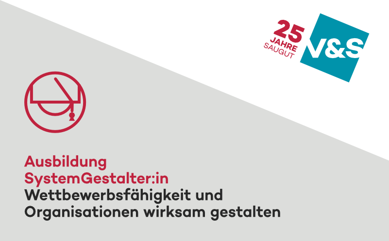

Ausbildung in 3 Blöcken · mit V&S
SystemGestalter
Wirksame SystemGestaltung für mehr Wettbewerbskraft
Die relevanten Kernprinzipien verschiedener Denkschulen – praxisnah und umsetzungsorientiert. Mit wenigen Kern-Ideen handwerkliche Fehler vermeiden und viel Wirkung erzeugen.

Drei Blöcke, eine Ausbildung
Block 1 · 16.–17. September 2026 · Hannover
Denk- und Handlungsvielfalt
Lean, Agile, Theory of Constraints, Projektmanagement & Steuerung. Was hilft wann – und warum? Du lernst die Stärken, Grenzen und Kombinationsmöglichkeiten zentraler Denkmodelle kennen. Im Zentrum steht die Frage: Was passt wirklich zu welchem Problem?
Block 2 · 07.–08. Oktober 2026 · Firma Herding, Amberg
Führung gestalten
Wie sieht Führung aus, die Organisationen lebendig, beweglich und leistungsstark macht? Wir erleben Praxis – direkt bei Firma Herding vor Ort. Mit Führungskräften, Praktikern und echten Fällen. Inklusive Austausch mit erfahrenen Entscheidern.
Block 3 · Inhouse bei Ihnen vor Ort
Vertiefung, Anwendung & Transfer
Deine Praxis im Mittelpunkt. Deep-Dives in echte Fälle, zwei praxiserprobte Planspiele, und alles zum Mitnehmen: Nutzungslizenz für alle Checklisten, Kartensets, Planspiele und Tools zur direkten Anwendung in der eigenen Organisation.
Denkhintergrund
Integrativer Denkansatz basierend auf 25 Jahren Erfahrung. Die Ausbildung vereint Paradigmen, die häufig getrennt behandelt werden:
Lean
Klarheit, Fokus, Kundennutzen
Agile
Iteratives Lernen & adaptive Strukturen
TOC
Engpassdenken für systemischen Durchbruch
Systemtheorie
Organisationen als soziale Systeme
Six Sigma
Datenbasierte Exzellenz
20/80
Vom Problem her denken, nicht von der Lösung
Für wen?
- HR, OE & Culture Professionals mit Beratungsauftrag
- Agile Rollen, die mehr als Scrum und SAFe wollen
- (Inhouse-)Berater und Führungskräfte
- Alle, die systemischer denken und wirksamer handeln wollen
Investition
Einzelner Block
1.750 EUR
pro Person, inkl. Mittagessen & Getränke
Gesamte Ausbildung (3 Blöcke)
4.950 EUR
pro Person, inkl. Nutzungslizenz aller Tools